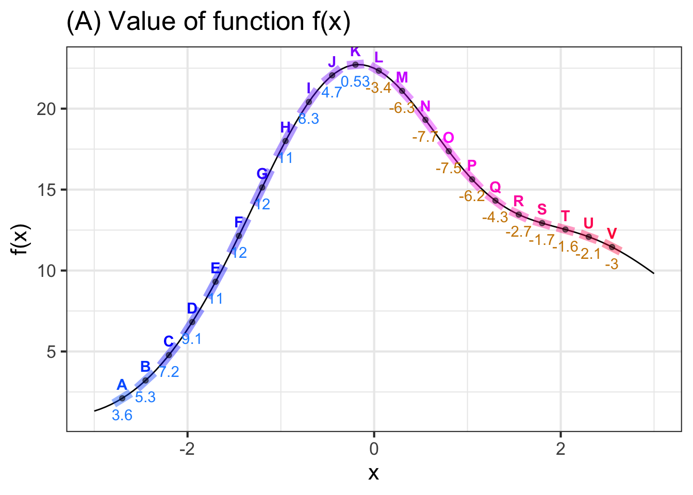
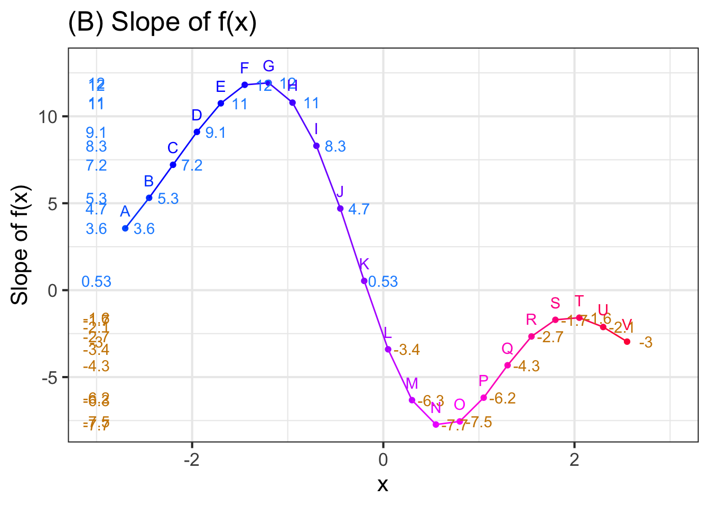
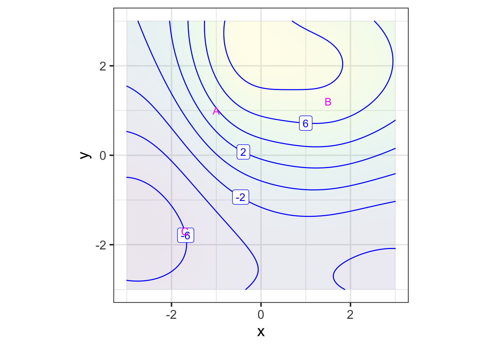
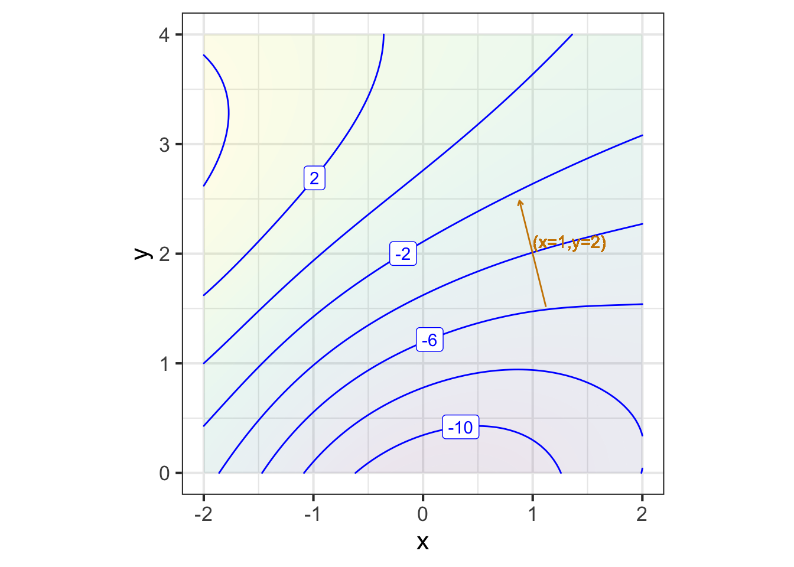
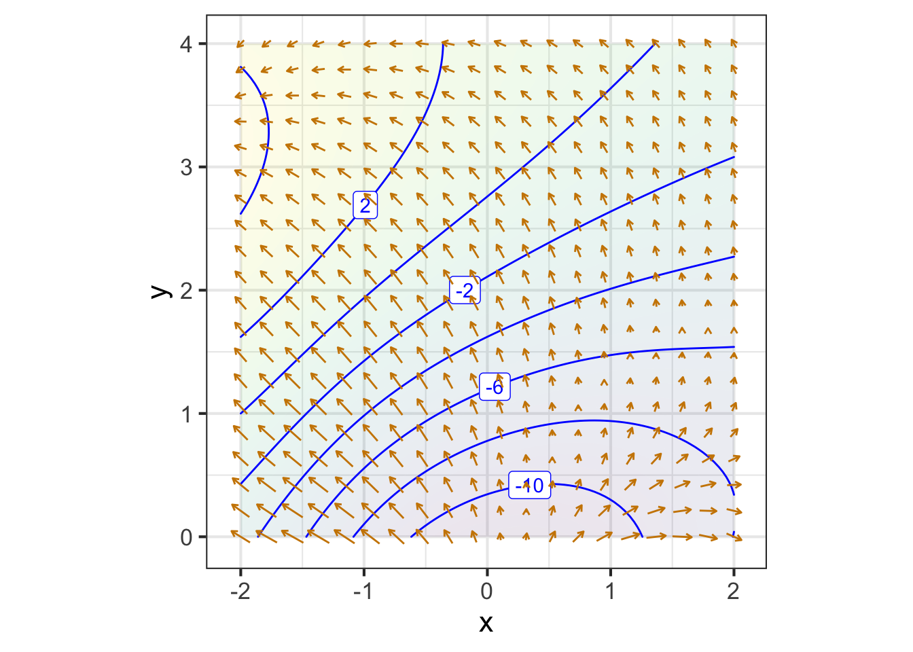

25 Partial change and the gradient vector
This is a good time to point out something we have been doing all along, but which has likely been such a persistent component of your mathematics education that you may not have realized that it is a construction.
We have two ways by which we represent functions:
- As a computational algorithm for generating the output from an input(s), typically involving arithmetic and such.
- As a geometrical entity, specifically the graph of a function which can be a curve or, for functions of two inputs, a surface.
These two modes are sometimes intertwined, as when we use the name “line” to refer to a computational object: \(\line(x) \equiv a x + b\).
Unfortunately for functions of two inputs, a surface is hard to present in the formats that are most easily at hand: a piece of paper, a printed page, a computer screen. That’s because a curved surface is naturally a 3-dimensional object, while paper and screens provide two-dimensional images. Consequently, the graphics mode we prefer for presenting functions of two inputs is the contour plot, which is not a single geometrical object but a set of many objects: contours, labels, colored tiles.
We’ve been doing calculus on functions with one input because it is so easy to exploit both the computational mode and the graphical mode. And it might fairly be taken as a basic organizing theme of calculus that
a line segment approximates a curve in a small region around a point.
When figuring out the derivative function \(\partial_x f(x)\) from a graph of \(f(x)\), we find the tangent to the graph at each of many input values, record the slope of the line (and throw away the intercept) and then write down the series of slopes as a function of the input, typically by representing the slope by position along the vertical axis and the corresponding input by position along the horizontal axis. Figure 25.1 shows the process.

Panel (A) in Figure 25.1 shows a smooth function \(f(x)\) (thin black curve). To find the function \(\partial_x f(x)\), we take the slope of \(f(x)\) at many closely spaced inputs. In Panel (A), we’ve highlighted short, tangent line segments at the closely-spaced points labeled A through V. The slope of each tangent line segment can be calculated by the usual rise-over-run method; the numerical value of the slope is written underneath the segment. To plot the derivative \(\partial_x f(x)\), I have taken the slope information from (A) and plotted it as a function of \(x\).
To restate what you already know, in the neighborhood of any input value \(x\), the slope of any local straight-line approximation to \(f(x)\) is given by the value of of \(\partial_x f(x)\).
25.1 Calculus on two inputs
Although we use contour plots for good practical reasons, the graph of a function \(g(x,y)\) with two inputs is a surface, as described in Section @ref(surface-plot). The derivative of \(g(x,y)\) should encode the information needed to approximate the surface at any input \((x,y)\). In particular, we want the derivative of \(g(x,y)\) to tell us the orientation of the tangent plane to the surface.
A tangent plane is infinite in extent. Let’s use the word facet to refer to a little patch of the tangent plane centered at the point of contact. Each facet is flat. (It’s part of a plane!) Figure 25.2 shows some facets tangent to a familiar curved surface. No two of the facets are oriented the same way.

Better than a picture of a summer melon, pick up a hardcover book and place it on a curved surface such as a basketball. The book cover is a flat surface: a facet. The orientation of the cover will match the orientation of the surface at the point of tangency. Change the orientation of the cover and you will find that the point of tangency will change correspondingly.
If melons and basketballs are not your style, you can play the same game on an interactive graph of a function with two inputs. The snapshot below is a link to an applet that shows the graph of a function as a blue surface. You can specify a point on the surface by setting the value of the (x, y) input using the sliders. Display the tangent plane (which will be green) at that point by check-marking the “Tangent plane” input. (Acknowledgments to Alfredo Sánchez Alberca who wrote the applet using the GeoGebra math visualization system.)
::: {asis eval=knitr::is_html_output()}  :::
:::
For the purposes of computation by eye, a contour graph of a surface can be easier to deal with. Figure 25.3 shows the contour graph of a smoothly varying function. Three points have been labeled A, B, and C.

Zooming in on each of the marked points presents a simpler picture for each of them, although one that is different for each point. Each zoomed-in plot contains almost parallel, almost evenly spaced contours. If the surface had been exactly planar over the entire zoomed-in domain, the contours would be exactly parallel and exactly evenly spaced. We can approach such exact parallelness by zooming in more closely around the labeled point.
Just as the function \(\line(x) \equiv a x + b\) describes a straight line, the function \(\text{plane}(x, y) \equiv a + b x + c y\) describes a plane whose orientation is specified by the value of the parameters \(b\) and \(c\). (Parameter \(a\) is about the vertical location of the plane, not it’s orientation.)
In the bottom row of Figure 25.4, the facets tangent to the original surface at A, B, and C are displayed. Comparing the top and bottom rows of Figure 25.4) you can see that each facet has the same orientation as the surface; the contours face in the same way.
Remember that the point of constructing such facets is to generalize the idea of a derivative from a function of one input \(f(x)\) to functions of two or more inputs such as \(g(x,y)\). Just as the derivative \(\partial_x f(x_0)\) reflects the slope of the line tangent to the graph of \(f(x)\) at \(x=x_0\), our plan for the “derivative” of \(g(x_0,y_0)\) is to represent the orientation of the facet tangent to the graph of \(g(x,y)\) at \((x=x_0, y=y_0)\). The question for us now is what information is needed to specify an orientation.
One clue comes from the formula for a function whose graph is a plane oriented in a particular direction:
\[\text{plane}(x,y) \equiv a + b x + cy\]
To explore the roles of the parameters \(b\) and \(c\) in setting the orientation of the line, open a SANDBOX. The scaffolding code generates a particular instance of \(\text{plane}(x,y)\) and plots it in two ways: a contour plot and a surface plot. Change the numerical values of \(b\) and \(c\) and observe how the orientation of the planar surface changes in the graphs. You can also see that the value of \(a\) is irrelevant to the orientation of the plane, just as the intercept of a straight-line graph is irrelevant to the slope of that line.
plane <- makeFun(a + b*x + c*y ~ x + y, a = 1, b = -2.5, c = 1.6)
if (knitr::is_html_output()) {
interactive_plot(plane(x, y) ~ x + y, domain(x=c(-2, 2), y=c(-2, 2)))
} else {
knitr::include_graphics("www/plane-3d.png")
}contour_plot(plane(x, y) ~ x + y, domain(x=c(-2, 2), y=c(-2, 2))) %>%
gf_refine(coord_fixed())
As always it can be difficult to extract quantitative information from a surface plot. For the example here, you can see that the high-point on the surface is when \(x\) is most negative and \(y\) is most positive. Compare that to the contour plot to verify that two modes are displaying the same surface.
(Note: The gf_refine(coord_fixed()) part of the contour-plot command makes numerical intervals on the horizontal and vertical axes have the same length.)
An instructive experience is to pick up a rigid, flat object, for instance a smartphone or hardcover book. Hold the object level with pinched fingers at the mid-point of each of the short ends, as shown in ?fig-hold-book (left).


You can tip the object in one direction by raising or lowering one hand. (middle picture) And you can tip the object in the other coordinate direction by rotating the object around the line joining the points grasped by the left and right hands. (right picture) By combining these two motions, you can orient the surface of the object in a wide range of directions.1
The purpose of this lesson is to show that two-numbers are sufficient to dictate the orientation of a plane. In terms of ?fig-hold-book these are 1) the amount that one hand is raised relative to the other and 2) the angle of rotation around the hand-to-hand axis.
Similarly, in the formula for a plane, the orientation is set by two numbers, \(b\) and \(c\) in \(\text{plane}(x, y) \equiv a + b x + c y\).
How do we find the right \(b\) and \(c\) for the tangent facet to a function \(g(x,y)\) at a specific input \((x_0, y_0)\)? Taking slices of \(g(x,y)\) provides the answer. In particular, these two slices: \[\text{slice}_1(x) \equiv g(x, y_0) = a + b\, x + c\, y_0 \\ \text{slice}_2(y) \equiv g(x_0, y) = a + b x_0 + c\, y\]
Look carefully at the formulas for the slices. In \(\text{slice}_1(x)\), the value of \(y\) is being held constant at \(y=y_0\). Similarly, in \(\text{slice}_2(y)\) the value of \(x\) is held constant at \(x=x_0\).
The parameters \(b\) and \(c\) can be read out from the derivatives of the respective slices: \(b\) is equal to the derivative of the slice\(_1\) function with respect to \(x\) evaluated at \(x=x_0\), while \(c\) is the derivative of the slice\(_2\) function with respect to \(y\) evaluated at \(y=y_0\). Or, in the more compact mathematical notation:
\[b = \partial_x \text{slice}_1(x)\left.\strut\right|_{x=x_0} \ \ \text{and}\ \ c=\partial_y \text{slice}_2(y)\left.\strut\right|_{y=y_0}\] These derivatives of slice functions are called partial derivatives. The word “partial” refers to examining just one input at a time. In the above formulas, the \({\large |}_{x=x_0}\) means to evaluate the derivative at \(x=x_0\) and \({\large |}_{y=y_0}\) means something similar.
You don’t need to create the slices explicitly in order to calculate the partial derivatives. Simply differentiate \(g(x, y)\) with respect to \(x\) in order to get parameter \(b\) and differentiate \(g(x, y)\) with respect to \(y\) to get parameter \(c\). To demonstrate, we’ll make use of the sum rule: \[\partial_x g(x, y) = \underbrace{\partial_x a}_{=0} + \underbrace{\partial_x b x}_{=b} + \underbrace{\partial_x cy}_{=0} = b\] Similarly, \[\partial_y g(x, y) = \underbrace{\partial_y a}_{=0} + \underbrace{\partial_y b x}_{=0} + \underbrace{\partial_y cy}_{=c} = c\]
Get in the habit of noticing the subscript on the differentiation symbol \(\partial\). When taking, for instance, \(\partial_y f(x,y,z, \ldots)\), all inputs other than \(y\) are to be held constant. Some examples:
\[\partial_y 3 x^2 = 0\ \ \text{but}\ \ \ \partial_x 3 x^2 = 6x\\ \ \\ \partial_y 2 x^2 y = 2x^2\ \ \text{but}\ \ \ \partial_x 2 x^2 y = 4 x y \]
25.2 All other things being equal …
Recall that the derivative of a function with one input, say, \(\partial_x f(x)\) tells you, at each possible value of the input \(x\), how much the output will change proportional to a small change in the value of the input.
Now that we are in the domain of multiple inputs, writing \(h\) to stand for “a small change” is not entirely adequate. Instead, we’ll write \(dx\) for a small change in the \(x\) input and \(dy\) for a small change in the \(y\) input.
With this notation, we write the first-order polynomial approximation to a function of a single input \(x\) as \[f(x+dx) = f(x) + \partial_x f(x) \times dx\] Applying this notation to functions of two inputs, we have: \[g(x + \color{magenta}{dx}, y) = g(x,y) + \color{magenta}{\partial_x} g(x,y) \times \color{magenta}{dx}\] and \[g(x, y+\color{brown}{dy}) = g(x,y) + \color{brown}{\partial_y} g(x,y) \times \color{brown}{dy}\]
Each of these statements is about changing one input while holding the other input(s) constant. Or, as the more familiar expression goes, “The effect of changing one input all other things being equal or all other things held constant.2
Everything we’ve said about differentiation rules applies not just to functions of one input, \(f(x)\), but to functions with two or more inputs, \(g(x,y)\), \(h(x,y,z)\) and so on.
25.3 Gradient vector
For functions of two inputs, there are two partial derivatives. For functions of three inputs, there are three partial derivatives. We can, of course, collect the partial derivatives into Cartesian coordinate form. This collection is called the gradient vector.
Just as our notation for differences (\(\cal D\)) and derivatives (\(\partial\)) involves unusual typography on the letter “D,” the notation for the gradient involves such unusual typography although this time on \(\Delta\), the Greek version of “D.” For the gradient symbol, turn \(\Delta\) on its head: \(\nabla\). That is, \[\nabla g(x,y) \equiv \left(\stackrel\strut\strut\partial_x g(x,y), \ \ \partial_y g(x,y)\right)\]
Note that \(\nabla g(x,y)\) is a function of both \(x\) and \(y\), so in general the gradient vector differs from place to place in the function’s domain.
The graphics convention for drawing a gradient vector for a particular input, that is, \(\nabla g(x_0, y_0)\), puts an arrow with its root at \((x_0, y_0)\), pointing in direction \(\nabla g(x_0, y_0)\), as in Figure 25.8.
## Warning in makeFun.formula(g(x, y) ~ x, suppress.warnings = FALSE): Implicit
## variables without default values (dangerous!): y
## Warning in makeFun.formula(g(x, y) ~ x, suppress.warnings = FALSE): Implicit
## variables without default values (dangerous!): y
## Warning in makeFun.formula(g(x, y) ~ y, suppress.warnings = FALSE): Implicit
## variables without default values (dangerous!): x
## Warning in makeFun.formula(g(x, y) ~ y, suppress.warnings = FALSE): Implicit
## variables without default values (dangerous!): x
A gradient field (see Figure 25.9) is the value of the gradient vector at each point in the function’s domain. Graphically, in order to prevent over-crowding, the vectors are drawn at discrete points. The lengths of the drawn vectors are set proportional to the numerical length of \(\nabla g(x, y)\), so a short vector means the surface is relatively level, a long vector means the surface is relatively steep.

25.4 Total derivative (optional)
The name “partial derivative” suggests the existence of some kind of derivative that’s not just a part, but the whole thing. The total derivative is such a whole and gratifyingly made up of it’s parts, that is, the partial derivatives.
Suppose you are modeling the temperature of some volume of the atmosphere, given as \(T(t, x, y, z)\). This merely says that the temperature depends on both time and location, something that is familiar from everyday life.
The partial derivatives have an easy interpretation: \(\partial_t T()\) tells how the temperature is changing over time at a given location, perhaps because of the evaporation or condensation of water vapor. \(\partial_x T()\) tells how the temperature changes in the \(x\) direction, and so on.
The total derivative gives an overall picture of the changes in a parcel of air, which you can thnk of as a tiny balloon-like structure but without the balloon membrane. The temperature inside the “balloon” may change with time (e.g. condensation or evaporation of water), but as the ballon drifts along with the motion of the air (that is, the wind), the evolving location can change the temperature as well. Think of a balloon caught in an updraft: the temperature goes down as the balloon ascends.
For an imaginary observer located in the balloon, the temperature is changing with time. Part of this change is the instrinsic change measured by \(\partial_t T\) but we need to add to that the changes induces by the evolving location of the balloon. The partial change in temperature due to a change in altitude is \(\partial_z T\), but it’s important to realize that the coordinates of the location are themselves functions of time: \(x(t), y(t), z(t)\). Seeing the function \(T()\) for the observer in the balloon as a function of \(t\), we have \(T(t, x(t), y(t), z(t))\). This is a function composition: \(T()\) composed with each of \(x()\), \(y()\), and \(z()\). Recall in the chain rule \(\partial_v f(g(v)) = \partial_v f(g(v)) \partial_v g(v)\) that the derivative of the composed quantity is the product of two derivatives.
Likewise, the total derivative of temperature with respect to the observer riding in the balloon will be add together the parts due to changes in time (holding position constant), x-coordinate (holding time and the other space coordinates constant), and the like. Signifying the total differentiation with a capital \(D\), we have \[D\, T(t) = \partial_t T() + \partial_x T() \cdot\partial_t x + \partial_y T()\cdot \partial_t y + \partial_z T() \cdot\partial_t z\] Note that \(\partial_t x\) is the velocity of the balloon in the x-direction, and similarly for the other coordinate directions. Writing these velocities as \(v_x, v_y, v_z\), the total derivative for temperature of a parcel of air embedded in a moving atmosphere is
\[D\ T(t) = \partial_t T + v_x\, \partial_x T + v_y\, \partial_y T + v_z\, \partial_z T\] Formulations like this, which put the parts of change together into a whole, are often seen in the mathematics of fluid flow as applied in meteorology and oceanology.
25.5 Differentials
A little bit of this, a little bit of that. — Stevie Wonder, “The Game of Love”
We have framed calculus in terms of functions: transformations that take one (or more!) quantities as input and return a quantity as output. This was not the original formulation. In this section, we will use the original style in order to demonstrate how you can sometimes skip the step of constructing a function before differentiating to answer a question of the sort: “If this quantity changes by a little bit, how much will another, related quantity change?”
As an example, consider the textbook-style problem of a water skier being pulled along the water by a rope pulled in from the top of a tower of height \(H\). The skier is distance \(x\) from the tower. As the rope is winched in at a constant rate, does the skier go faster or slower as she approaches the tower.

In the function style of approach, we can write the position function \(x(t)\) with input the length of the rope \(L(t)\). Using the diagram, you can see that \[x(t) = \sqrt{\strut L(t)^2 - H^2}\ .\]
Differentiate both sides with respect to \(t\) to get the velocity of the skier: \(\partial_t x(t)\) through the chain rule: \[\underbrace{\partial_t x(t)}_{\partial_t f(g(t))} = \underbrace{\frac{1}{2\sqrt{\strut L(t)^2 - H^2}}}_{\left[ \partial_t f \right](g(t)) } \times \underbrace{\left[2 \partial_t L(t)\right]}_{\partial_t g(t)} = \frac{\partial_t L(t)}{\strut\sqrt{L(t)^2 - H^2}}\]
Now to reformulate the problem without defining a function.
Newton referred to “flowing quantities” or “fluents” and to what today is universally called derivatives as “fluxions.” Newton did not have a notion of inputs and output.3
At about the same time as Newton’s inventions, very similar ideas were being given very different names by mathematicians on the European continent. There, an infinitely small change in a quantity was called a “differential” and the differential of \(x\) was denoted \(dx\).
The first calculus textbook was subtitled, Of the Calculus of Differentials, in other words, how to calculate differentials. (See Figure 25.10.) Section I of this 1696 text is entitled, “Where we give the rules of this calculation,” those rules being recognizably the same as presented in Section 23 of this book.

Definition I of Section I states,
“We call quantities variable* that grow or decrease continuously; and to the contrary constant quantities are those that remain the same while the others change. … The infinitely small amount by which a continuous quantity increases or decreases is called the differential.*”
The differential is not a derivative. The differential is an infinitely small change in a quantity and a derivative is a rate of change. The differential of a quantity \(x\) is written \(dx\) in the textbook.4
The point of Section I of de l’Hôpital’s textbook is to present the rules by which the differentials of complex quantities can be calculated. You’ll recognize the product rule in de l’Hôpital’s notation:

The Pythagorean theorem relates the various quantities this way:
\[L^2 = x^2 + H^2\]
The differential of each side of the equation refers to “a little bit” of increase in the quantity on that side of the equation: \[d(L^2) = d(x^2)\ \ \ \implies\ \ \ 2 L\, dL = 2 x\, dx\] where we’ve used one of the “rules” for calculating differentials. This gives us \[dx = \frac{L}{x} dL\] Think of this as a recipe for calculating \(dx\). If you tell me \(L\), \(x\), and \(dL\) then you can calculate the value of \(dx\). For instance, suppose the tower is 52 feet tall and that there is \(L=173\) feet of tow-rope extending to the skier. The Pythagorean theorem tells us the skier is \(x=165\) feet from the base of the tower. The rope is, let us suppose, being pulled in at the top of the tower at \(dL = 10\) feet per second. How fast is \(x\) changing? \[dx = \frac{173\ \text{ft}}{165\ \text{ft}} \times 10 \text{ft s}^{-2} = 10.05\ \text{ft s}^{-1}\]
We’ll return to “a little bit of this” when we explore how to add up little bits to get the whole in Section 38.
25.6 Exercises
<!– Drill
Part i What is \(\partial_x x\)?
\(0\)\(1\)\(x\)\(y\)
Part ii What is \(\partial_x y\)?
\(0\)\(1\)\(x\)\(y\)
Part iii What is \(\partial_x a\, x\)?
\(0\)\(a\)\(x\)\(y\)
Part iv What is \(\partial_x x\, y\)?
\(0\)\(1\)\(x\)\(y\)
Part v What is \(\partial_y x\, y\)?
\(0\)\(1\)\(x\)\(y\)
Part vi What is \(\partial_x A e^{kt}\)?
\(0\)\(A k e^{kx}\)\(t\)
Part vii What is \(\partial_t A e^{kt}\)?
\(0\)\(k A e^{kt}\)\(k A e^{kx}\)\(t A e^{kt}\)
Part viii What is \(\partial_x A x e^{kt}\)?
\(A e^{kt}\)\(A x e^{kt}\)\(0\)\(A k x e^{kt}\)
Part ix What is \(\partial_t A x e^{kt}\)?
\(A e^{kt}\)\(A k e^{kt}\)\(0\)\(A k x e^{kt}\)
Part x What is \(\partial_x \left[\strut a_0 + a_1 x + a_2 x^2 \right]\)?
0\(a_1 + 2 a_2 x\)\(a_1 + a_2 x\)\(a_0 + a_1 x\)
Part xi What is \(\partial_y \left[\strut a_0 + a_1 x + a_2 x^2 \right]\)?
0\(a_1 + 2 a_2 x\)\(a_1 + a_2 x\)\(a_1 + 2 a_2 y\)
Part xii What is \(\partial_x \left[\strut a_0 + a_1 y + a_2 y^2 \right]\)?
0\(a_1 + 2 a_2 x\)\(a_1 + a_2 x\)\(a_1 + 2 a_2 y\)
Part xiii What is \(\partial_x \left[\strut a_0 + a_1 x + b_1 y + c x y \right]\)?
\(a_1 + c\)\(a_1\)\(a_1 + cy\)\(a_1 + b1 + c\)
Part xiv What is \(\partial_y \left[\strut a_0 + a_1 x + b_1 y + c x y \right]\)?
\(b_1 + c\)\(b_1\)\(b_1 + cx\)\(a_1 + b1 + c\)
Part xv What is \(\partial_x \partial_y \left[\strut a_0 + a_1 x + b_1 y + c x y \right]\)? (Usually we would write \(\partial_{xy}\) instead of \(\partial_x \partial_y\), but they amount to the same thing.)
\(0\)\(a_1\)\(c\)\(b_1\)
Part xvi What is \(\partial_x \partial_x \left[\strut a_0 + a_1 x + b_1 y + c x y \right]\)? (Usually we would write \(\partial_{xx}\) instead of \(\partial_x \partial_x\), but they amount to the same thing.)
\(0\)\(a_1\)\(c\)\(b_1\)
Part xvii What is \(\partial_x \partial_x \left[\strut a_0 + a_1 x + b_1 y + c x y + a_2 x^2 + b_2 y^2 \right]\)? (Usually we would write \(\partial_{xx}\) instead of \(\partial_x \partial_x\), but they amount to the same thing.)
\(0\)\(a_2\)\(2 a_2\)\(c + a_2\)
Part xviii What is \(\partial_y \partial_x \left[\strut a_0 + a_1 x + b_1 y + c x y + a_2 x^2 + b_2 y^2 \right]\)? (Usually we would write \(\partial_{yx}\) instead of \(\partial_y \partial_x\), but they amount to the same thing.)
\(0\)\(2 a_2\)\(c\)\(2 b_2\)
Part xix What is \(\partial_x \left[\strut A x^n y^m \right]\)?
- \(A y^m\)
- \(A n m x^{n-1} y^{m-1}\)
- \(A n x^{n-1} y^m\)
- \(A m x^{n} y^{m-1}\)
Part xx What is \(\partial_y \left[\strut A x^n y^m \right]\)?
- \(A m y^{m-1}\)
- \(A n m x^{n-1} y^{m-1}\)
- \(A n x^{n-1} y^m\)
- \(A m x^{n} y^{m-1}\)
Part xxi What is \(\partial_{xy} \left[\strut A x^n y^m \right]\)?
- \(A m x^{n-1} y^{m-1}\)
- \(A n m x^{n-1} y^{m-1}\)
- \(A n x^{n-1} y^{m-1}\)
- \(A m x^{n} y^{m-1}\)
Part xxii What is \(\partial_x \left[\strut f(x) + y\right]\)?
- \(0\)
- \(\partial_x f(x) + 1\)
- \(\partial_x f(x)\)
- \(\partial_x f(x) + y\)
Part xxiii What is \(\partial_x \left[\strut f(x) + g(y)\right]\)?
- \(0\)
- \(\partial_x f(x) + \partial_x g(y)\)
- \(\partial_x f(x)\)
- \(\partial_x f(x) + \partial_y g(y)\)
Part xxiv What is \(\partial_y \left[\strut f(x) + g(y)\right]\)?
0\(\partial_x g(y)\)\(\partial_x f(x)\)\(\partial_y g(y)\)
Part xxv What is \(\partial_x \partial_y \left[\strut f(x) + g(y)\right]\)?
- 0
- \(\partial_x \partial_y g(y)\)
- \(\partial_x f(x)\)
- \(\partial_y g(y)\)
Part xxvi What is \(\partial_y \partial_y \left[\strut f(x) + g(y)\right]\)?
01\(\partial_y g(y)\)\(\partial_{yy} g(y)\)
Part xxvii What is \(\partial_y f(x) g(y)\)?
- \(g(y)\ \partial_y f(x) + f(x) \ \partial_y g(y)\)
- \(f(x)\ \partial_{y} g(y)\)
- \(\partial_y g(y)\)
- 0
Part xxviii What is \(\partial_y h(x,y) g(y)\)?
- $ g(y) _y h(x,y) + h(x,y) _y g(y)$
- \(g(y) \partial_y h(x, y)\)
- \(\partial_y g(y)\)
- 0
Part xxix What is \(\partial_x h(x,y) g(y)\)?
- \(g(y) \partial_y h(x, y)\)
- \(g(y)\ \partial_x h(x,y) + h(x,y)\ \partial_x g(y)\)
- \(\partial_x h(x, y)\)
- \(g(y) \partial_x h(x, y)\)
Part xxx What is \(\partial_{yx} h(x,y) g(y)\)?
- \((\partial_x g(y))\ (\partial_x h(x, y)) + g(y) (\partial_{xx} h(x, y) )\)
- \(g(y) \partial_{yx} h(x,y) + h(x,y)\ \partial_y g(y)\)
- \(\partial_{yx} h(x, y)\)
- \((\partial_y g(y)) \ (\partial_x h(x, y)) + g(y)\ (\partial_{yx} h(x, y))\)
Part xxxi What is the “with-respect-to” input in \(\partial_y xy\)?
\(y\)\(x\)\(1\)
Part xxxii What is the “with-respect-to” input in \(\partial_x y\)?
\(y\)\(x\)\(1\)
Part xxxiii What is the “with-respect-to” input in \(\partial_t y\)?
\(y\)\(t\)\(1\)
Part xxxiv 
At which of these inputs is the function steepest in the x-direction?
\((x=0, y=1)\)\((x=1, y=5)\)\((x=0, y=6)\)\((x=-2, y=6)\)
Part xxxv
At which of these inputs is the function practically flat?
\((x=0, y=1)\)\((x=1, y=2)\)\((x=0, y=6)\)\((x=-2, y=3)\)
Part xxxvi
You are standing on the input point \((x=-1,y=4)\). In terms of the compass points (where north would be up and east to the right), which direction points most steeply uphill from where you are standing.
NESESWNW
Part xxxvii
You are standing on the input point \((x=2,y=1)\). In terms of the compass points (where north would be up and east to the right), which direction points most steeply uphill from where you are standing.
NESESWNW
Part xxxviii
You have been hiking all day and have reached map coordinate (x=2, y=2). You are completely exhausted. Time for a break. You want to walk along the hill, without any change of elevation. Which compass direction should you head in to get started?
NE or SWSE but not NWNW or SENW but not SE
In describing the orientation of aircraft and ships, three parameters are used: pitch, roll, and yaw. For a geometrical plane (as opposed to an aircraft or ship, which have distinct front and back ends), yaw isn’t applicable.↩︎
The Latin phrase for this is ceteris paribus, often used in economics.↩︎
The meaning of “output” as “to produce” dates from more than 100 years after Newton’s death.↩︎
A “warning” is given in the textbook that the symbol \(d\) will always be used to mark the differential of a variable quantity and that \(d\) will never be used to indicate a parameter.↩︎